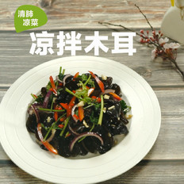

我的美食属性（未开放）
家常菜谱
中华菜系
各地小吃
外国菜谱
烘焙
厨房百科
食材百科
家常菜谱
家常菜
私家菜
凉菜
海鲜
热菜
汤粥
素食
酱料蘸料
微波炉
火锅底料
甜品点心
糕点主食
干果制作
卤酱
时尚饮品
每日三餐
早餐
午餐
晚餐
下午茶
夜宵
人群
老年人
产妇
孕妇
宝宝食谱-婴儿食谱
功效
疾病调理
功能性调理
脏腑调理
人群膳食
中华菜系
川菜
湘菜
粤菜
东北菜
鲁菜
浙菜
苏菜
清真菜
闽菜
沪菜
京菜
湖北菜
徽菜
豫菜
西北菜
云贵菜
江西菜
山西菜
广西菜
港台菜
其它菜
各地小吃
四川小吃
广东小吃
北京小吃
陕西小吃
山东小吃
山西小吃
湖南小吃
河南小吃
上海小吃
江苏小吃
湖北小吃
重庆小吃
天津小吃
河北小吃
浙江小吃
新疆小吃
江西小吃
福建小吃
广西小吃
云南小吃
辽宁小吃
吉林小吃
贵州小吃
安徽小吃
台湾小吃
甘肃小吃
香港小吃
蒙古小吃
宁夏小吃
青海小吃
海南小吃
西藏小吃
成都小吃
黑龙江小吃
国家
韩国料理
日本料理
西餐面点
法国菜
意大利餐
美国家常菜
东南亚菜
墨西哥菜
澳大利亚菜
其他国家
上菜顺序
餐前小吃
汤品
主菜
主食
饮品
甜点
烘焙
蛋糕面包
饼干配方
甜品点心
烘焙工具
烘焙常识
烘焙原料
厨房百科
食材的选购及保存
生活妙招
食材创意
摆盘围边
烹饪技巧
美食专题
蔬果类
蔬菜
水果
薯类淀粉
菌藻
生鲜类
畜肉
禽肉
鱼虾蟹贝
蛋类
五谷
谷类
干豆
坚果种子
食品与饮品
速食食品
婴幼儿食品
小吃甜饼
糖蜜饯
乳类
软饮料
酒精饮料
维生素
维生素A
维生素B1
维生素B2
维生素B6
维生素B12
维生素C
维生素E
体质
阳虚质
阴虚质
气虚质
气郁质
痰湿质
湿热质
血瘀质
特禀质
平和质
印象中的那些妈妈的味道
最新
|
最热
咖喱鸡
48 评论 428 人气
美食小编
6步 / 大概30分钟
煮 / 咖喱味
美容瘦身
萝卜丸子
32 评论 348 人气
美食小编
4步 / 大概10分钟
炸 / 家常味
抵抗力
葡萄干花生酥
7 评论 242 人气
美食小编
7步 / 大概60分钟
烤 / 家常味
清热解毒
啤酒鸡翅
1 评论 435 人气
美食小编
4步 / 大概15分钟
炒 / 甜味
抵抗力
姜糖膏
0 评论 321 人气
美食小编
4步 / 大概2小时
炖 / 甜味
清热解毒
百合薏米银耳汤
0 评论 213 人气
食·色
9步 / 大概2小时
煮 / 甜味
防癌
粥日食|草莓糙米粥
13 评论 443 人气
粥日食
7步 / 大概60分钟
煮 / 甜味
保护视力
农家小炒肉
35 评论 297 人气
造食日记
4步 / 大概5分钟
炒 / 香辣味
翡翠山药泥卷 宝宝辅食食谱
2 评论 371 人气
宝宝辅食达人
14步 / 大概30分钟
烙 / 家常味
补铁
蒜苗回锅肉
53 评论 375 人气
美食小编
5步 / 大概30分钟
炒 / 家常味
降血脂
烤玉米
17 评论 371 人气
美食小编
4步 / 大概30分钟
烤 / 家常味
减肥瘦身
客家酿豆腐
8 评论 432 人气
美食小编
4步 / 大概30分钟
炒 / 家常味
补钙
炝土豆丝
4 评论 376 人气
美食小编
4步 / 大概10分钟
煮 / 家常味
美容瘦身
山药排骨汤
10 评论 5277 人气
美食小编
4步 / 大概60分钟
炖 / 咸鲜味
滋肾益精

凉拌木耳
20 评论 5275 人气
美食小编
5步 / 大概10分钟
拌 / 咸鲜味
强身健体
鲫鱼豆腐汤
2 评论 4786 人气
美食小编
5步 / 大概60分钟
炖 / 咸鲜味
增强体质
<<
1
2
3
4
5
...
>>